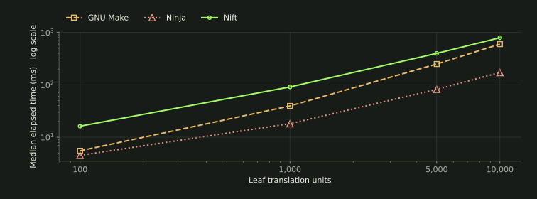
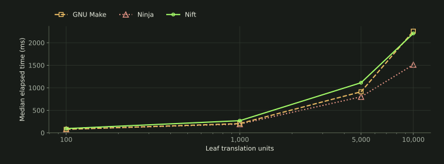
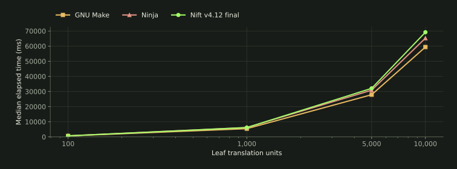
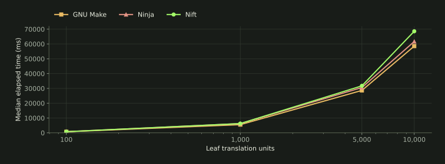
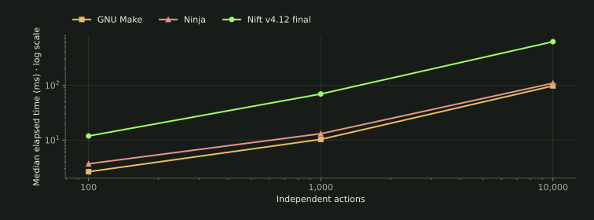
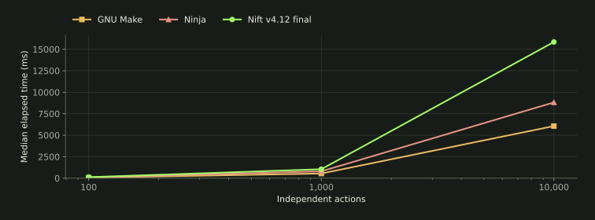
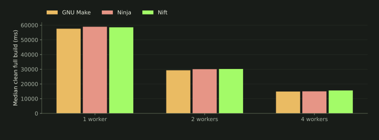
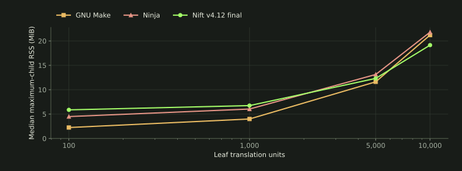
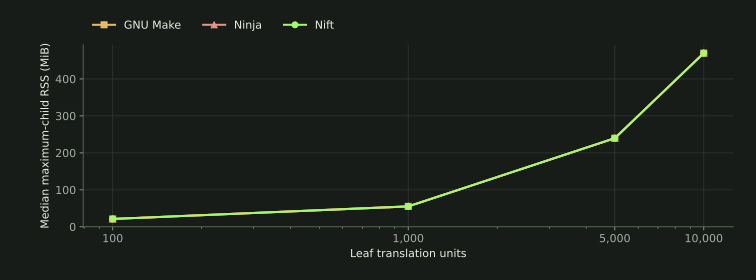
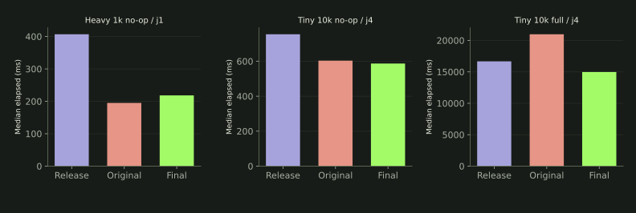

Build systems / same-node experiment
The build
is a graph.
GNU Make, Ninja and Nift execute the same native project. What costs time when nothing changes—and when everything does?
GNU Make 4.4.1 / Ninja 1.13.2 / Nift v4.12.0 final candidate · Frozen identities
Four corpus sizes · two compile profiles · workers 1 / 2 / 4
main.o also links directly (branch omitted)
three graph encodings · one executed-action oracle
Compiler-generated dependencies
Compiler dependency database
Ordering + explicit file dependencies
01 / noop
Nothing changed. Everything checked.
No-op includes graph loading and dependency checks. A zero action count is verified for every sample. These are warm prepared fixtures, not cold-machine boots.



| Corpus | GNU Make | Ninja | Nift v4.12 final | Samples / cell |
|---|---|---|---|---|
| 100 | 5.505 | 4.513 | 16.274 | 100 |
| 1,000 | 39.545 | 18.152 | 91.187 | 100 |
| 5,000 | 249.792 | 81.941 | 398.972 | 100 |
| 10,000 | 599.464 | 171.847 | 793.865 | 100 |
02 / leaf
One source edit. The whole graph in view.
A byte change in one leaf source recompiles one object, updates its static archive and relinks the executable. Setup is excluded; graph traversal, these three actions and bookkeeping are included.



| Corpus | GNU Make | Ninja | Nift v4.12 final | Samples / cell |
|---|---|---|---|---|
| 100 | 77.733 | 81.503 | 95.128 | 20 |
| 1,000 | 204.766 | 193.423 | 269.977 | 20 |
| 5,000 | 912.416 | 800.830 | 1,113.412 | 20 |
| 10,000 | 2,257.819 | 1,513.247 | 2,207.780 | 20 |
03 / fanout
A header edit expands the dirty set.
The private header reaches one object; a module header reaches 10% of translation units; the global header reaches all native leaf objects. Generated-input changes run both generator actions and rebuild their complete consumers.



| Corpus | GNU Make | Ninja | Nift v4.12 final | Samples / cell |
|---|---|---|---|---|
| 100 | 648.461 | 703.048 | 700.573 | 10 |
| 1,000 | 5,432.964 | 6,223.095 | 6,155.333 | 5 |
| 5,000 | 27,891.970 | 30,885.671 | 32,085.126 | 3 |
| 10,000 | 59,402.055 | 65,274.194 | 69,193.498 | 3 |
| Workload | GNU Make | Ninja | Nift v4.12 final | Actions | Samples / cell |
|---|---|---|---|---|---|
| Clean full | 5,533.921 | 6,271.295 | 6,256.290 | 1015 | 5 |
| Warm no-op | 39.545 | 18.152 | 91.187 | 0 | 100 |
| Leaf source | 204.766 | 193.423 | 269.977 | 3 | 20 |
| Private header | 204.195 | 199.589 | 273.849 | 3 | 20 |
| Module header | 712.879 | 764.652 | 862.083 | 102 | 5 |
| Global header | 5,432.964 | 6,223.095 | 6,155.333 | 1011 | 5 |
| Generated input | 5,471.629 | 6,432.447 | 6,093.185 | 1014 | 5 |
| 10 sources | 296.715 | 311.228 | 379.102 | 21 | 5 |
| 10% sources | 805.167 | 797.504 | 919.981 | 111 | 5 |
| Targeted module | 83.607 | 61.837 | 113.244 | 2 | 20 |
| Relink only | 162.216 | 143.656 | 209.825 | 1 | 20 |
| Clean + rebuild | 5,558.108 | 6,031.888 | 6,070.624 | 1015 | 5 |
04 / full
When the compiler owns the clock.
Clean full removes outputs before timing. Clean + rebuild includes a common removal/recreation command inside timing. Native graph size is translation units + 15 actions: generators, two additional objects, ten archives and a link.



| Corpus | GNU Make | Ninja | Nift v4.12 final | Samples / cell |
|---|---|---|---|---|
| 100 | 729.312 | 789.025 | 784.294 | 10 |
| 1,000 | 5,533.921 | 6,271.295 | 6,256.290 | 5 |
| 5,000 | 28,646.417 | 30,593.975 | 31,739.126 | 3 |
| 10,000 | 58,543.314 | 61,651.370 | 68,583.898 | 3 |
Large full-build cells have three measured samples. Their min–max spreads remain visible in the distributions below; no high-percentile or universal ranking claim follows from them.
05 / tiny
Just the orchestrator and tiny actions.
A separate graph contains independent deterministic FNV hash actions. It exposes loading, checking and dispatch costs; it is not C++ throughput and does not cover every DAG shape.



| Corpus | GNU Make | Ninja | Nift v4.12 final | Samples / cell |
|---|---|---|---|---|
| 100 | 2.649 | 3.696 | 11.853 | 100 |
| 1,000 | 10.287 | 13.043 | 68.947 | 100 |
| 10,000 | 96.950 | 108.268 | 617.328 | 100 |



| Corpus | GNU Make | Ninja | Nift v4.12 final | Samples / cell |
|---|---|---|---|---|
| 100 | 61.881 | 89.075 | 124.961 | 5 |
| 1,000 | 546.006 | 802.615 | 1,046.292 | 5 |
| 10,000 | 6,065.281 | 8,820.172 | 15,846.310 | 5 |
06 / parallel
Same graph. Different worker limits.
Every command uses the same allowed four logical CPUs. Worker limits are 1, 2 or 4. The heavier profile instantiates sixteen independent depth-128 templates per translation unit; its final binary behavior is unchanged. Compare workers within a fixed size/profile.



| Corpus / profile / workers | GNU Make | Ninja | Nift v4.12 final | Samples / cell |
|---|---|---|---|---|
| 1,000 / heavy / j1 | 57,589.250 | 58,931.576 | 58,537.590 | 3 |
| 1,000 / heavy / j2 | 29,326.793 | 30,084.082 | 30,222.056 | 5 |
| 1,000 / heavy / j4 | 14,866.715 | 15,002.578 | 15,621.580 | 5 |
100-unit light and heavy worker comparisons
| Corpus / profile / workers | GNU Make | Ninja | Nift v4.12 final | Samples / cell |
|---|---|---|---|---|
| 100 / light / j1 | 2,268.154 | 2,413.380 | 2,426.644 | 10 |
| 100 / light / j2 | 1,240.897 | 1,303.006 | 1,372.089 | 10 |
| 100 / light / j4 | 729.312 | 789.025 | 784.294 | 10 |
| 100 / heavy / j1 | 5,985.938 | 6,143.811 | 6,268.825 | 10 |
| 100 / heavy / j2 | 2,972.969 | 3,088.968 | 3,155.319 | 10 |
| 100 / heavy / j4 | 1,520.346 | 1,575.248 | 1,621.692 | 10 |
07 / correctness
Fast only counts when the work is right.
All 9,348 retained official observations, including warmups, pass the expected action-set and output-hash checks. A common wrapper records each generator, compiler, archive and link invocation. Missing, extra or duplicate work aborts the campaign.
Same bytes, same behavior
Generated files, objects, deterministic archives and executable hashes agree across all participants for each case. The executable verifies a known sum. Tiny outputs have an independent Python oracle.
Discovered dependencies checked
Make uses -MMD -MP depfiles; Ninja imports them into its dependency database. Every discovered object include closure is audited against Nift’s explicit file inputs.
Nift’s “depends” controls order, not invalidation. File dependencies include prerequisite outputs. Named Nift targets are forced; the targeted comparison starts with a dirty module for all three systems. An untimed subsequent full build verifies the final executable.
Deleted / renamed input and failure boundaries
Local certification checks unrelated files, source renames and deletions. Rename setup updates each graph and removes the affected object and obsolete depfile before timing. Make/Ninja reject a deleted source before dispatch; Nift attempts that compile and blocks downstream archive/link actions. Nonzero status and no unrelated actions are required. These failure diagnostics are not performance samples.
08 / resources
Memory follows the same workload.
CPU time and maximum-child RSS are retained for every timed command. Linux wait4 RSS is a child high-water measure, not summed simultaneous memory across parallel compiler processes. Wall time remains the primary metric.



| Corpus | GNU Make | Ninja | Nift v4.12 final | Samples / cell |
|---|---|---|---|---|
| 100 | 2.250 | 4.500 | 5.875 | 100 |
| 1,000 | 4.000 | 6.043 | 6.750 | 100 |
| 5,000 | 11.625 | 13.129 | 12.324 | 100 |
| 10,000 | 21.207 | 21.809 | 19.148 | 100 |



| Corpus | GNU Make | Ninja | Nift v4.12 final | Samples / cell |
|---|---|---|---|---|
| 100 | 21.250 | 21.250 | 21.312 | 20 |
| 1,000 | 55.215 | 55.215 | 55.215 | 20 |
| 5,000 | 239.746 | 239.625 | 239.686 | 20 |
| 10,000 | 469.867 | 469.867 | 469.863 | 20 |
7 of 60 cells with fewer than ten samples have min–max ranges exceeding 25% of their medians. This is a descriptive variability flag, not a confidence interval. Retained distributions below identify every cell; treat these medians cautiously.
Every measured cell: timing distributions, CPU and memory
| Case | System | n | Median ms | Min–max ms | p95 ms | p99 ms | CPU ms | RSS MiB |
|---|---|---|---|---|---|---|---|---|
| native / 100 / heavy / j1 / Clean full | GNU Make | 10 | 5,985.938 | 5,722.713–6,320.794 | — | — | 5,992.374 | 26.875 |
| native / 100 / heavy / j1 / Clean full | Nift v4.12 final | 10 | 6,268.825 | 5,959.749–6,564.507 | — | — | 6,278.982 | 26.875 |
| native / 100 / heavy / j1 / Clean full | Ninja | 10 | 6,143.811 | 5,868.723–6,853.849 | — | — | 6,143.490 | 26.875 |
| native / 100 / heavy / j1 / Global header | GNU Make | 10 | 5,783.628 | 5,591.709–6,530.987 | — | — | 5,790.247 | 26.750 |
| native / 100 / heavy / j1 / Global header | Nift v4.12 final | 10 | 6,043.688 | 5,825.365–6,482.011 | — | — | 6,050.824 | 26.750 |
| native / 100 / heavy / j1 / Global header | Ninja | 10 | 5,964.954 | 5,770.991–6,556.886 | — | — | 5,978.882 | 26.750 |
| native / 100 / heavy / j1 / Leaf source | GNU Make | 20 | 114.982 | 107.283–136.947 | 135.502 | — | 114.983 | 26.625 |
| native / 100 / heavy / j1 / Leaf source | Nift v4.12 final | 20 | 152.994 | 136.785–166.191 | 166.058 | — | 151.000 | 26.625 |
| native / 100 / heavy / j1 / Leaf source | Ninja | 20 | 115.900 | 107.950–139.359 | 135.489 | — | 116.088 | 26.625 |
| native / 100 / heavy / j1 / Warm no-op | GNU Make | 100 | 5.642 | 4.688–14.265 | 7.244 | 8.482 | 5.443 | 2.250 |
| native / 100 / heavy / j1 / Warm no-op | Nift v4.12 final | 100 | 31.758 | 29.138–43.146 | 38.502 | 41.318 | 29.444 | 5.875 |
| native / 100 / heavy / j1 / Warm no-op | Ninja | 100 | 4.689 | 3.844–7.674 | 5.993 | 6.669 | 4.464 | 4.500 |
| native / 100 / heavy / j2 / Clean full | GNU Make | 10 | 2,972.969 | 2,912.111–3,093.372 | — | — | 5,901.631 | 26.875 |
| native / 100 / heavy / j2 / Clean full | Nift v4.12 final | 10 | 3,155.319 | 3,079.732–3,343.947 | — | — | 6,233.342 | 26.875 |
| native / 100 / heavy / j2 / Clean full | Ninja | 10 | 3,088.968 | 2,987.927–3,369.015 | — | — | 6,124.957 | 26.875 |
| native / 100 / heavy / j2 / Global header | GNU Make | 10 | 2,975.345 | 2,886.278–3,329.712 | — | — | 5,904.831 | 26.750 |
| native / 100 / heavy / j2 / Global header | Nift v4.12 final | 10 | 3,053.971 | 2,962.060–3,467.672 | — | — | 6,043.499 | 26.750 |
| native / 100 / heavy / j2 / Global header | Ninja | 10 | 3,086.120 | 2,940.217–3,171.181 | — | — | 6,124.719 | 26.750 |
| native / 100 / heavy / j2 / Leaf source | GNU Make | 20 | 119.926 | 109.856–157.683 | 134.869 | — | 120.813 | 26.625 |
| native / 100 / heavy / j2 / Leaf source | Nift v4.12 final | 20 | 136.735 | 127.354–169.041 | 159.793 | — | 148.281 | 26.750 |
| native / 100 / heavy / j2 / Leaf source | Ninja | 20 | 116.672 | 106.044–143.431 | 128.152 | — | 116.931 | 26.625 |
| native / 100 / heavy / j2 / Warm no-op | GNU Make | 100 | 5.907 | 4.855–10.758 | 7.682 | 8.453 | 5.635 | 2.250 |
| native / 100 / heavy / j2 / Warm no-op | Nift v4.12 final | 100 | 22.667 | 19.009–34.605 | 26.288 | 30.997 | 32.707 | 5.875 |
| native / 100 / heavy / j2 / Warm no-op | Ninja | 100 | 4.708 | 3.937–11.559 | 6.093 | 7.067 | 4.463 | 4.500 |
| native / 100 / heavy / j4 / Clean full | GNU Make | 10 | 1,520.346 | 1,421.245–1,710.032 | — | — | 5,728.542 | 26.875 |
| native / 100 / heavy / j4 / Clean full | Nift v4.12 final | 10 | 1,621.692 | 1,529.599–1,879.393 | — | — | 6,104.625 | 26.875 |
| native / 100 / heavy / j4 / Clean full | Ninja | 10 | 1,575.248 | 1,514.319–1,917.993 | — | — | 5,908.904 | 26.875 |
| native / 100 / heavy / j4 / Global header | GNU Make | 10 | 1,569.204 | 1,530.647–1,827.384 | — | — | 5,995.609 | 26.750 |
| native / 100 / heavy / j4 / Global header | Nift v4.12 final | 10 | 1,583.193 | 1,512.789–1,851.546 | — | — | 6,046.585 | 26.750 |
| native / 100 / heavy / j4 / Global header | Ninja | 10 | 1,552.618 | 1,498.147–1,720.719 | — | — | 5,912.910 | 26.750 |
| native / 100 / heavy / j4 / Leaf source | GNU Make | 20 | 113.777 | 107.381–176.067 | 151.589 | — | 114.792 | 26.625 |
| native / 100 / heavy / j4 / Leaf source | Nift v4.12 final | 20 | 131.257 | 122.750–220.118 | 175.228 | — | 149.153 | 26.625 |
| native / 100 / heavy / j4 / Leaf source | Ninja | 20 | 116.688 | 107.503–131.220 | 128.990 | — | 116.868 | 26.625 |
| native / 100 / heavy / j4 / Warm no-op | GNU Make | 100 | 5.798 | 4.713–10.278 | 7.523 | 8.184 | 5.585 | 2.250 |
| native / 100 / heavy / j4 / Warm no-op | Nift v4.12 final | 100 | 16.988 | 14.720–28.043 | 20.539 | 25.422 | 35.769 | 5.875 |
| native / 100 / heavy / j4 / Warm no-op | Ninja | 100 | 4.606 | 3.856–6.184 | 5.907 | 6.052 | 4.399 | 4.500 |
| native / 100 / light / j1 / 10 sources | GNU Make | 20 | 316.716 | 286.095–345.281 | 336.226 | — | 316.398 | 21.375 |
| native / 100 / light / j1 / 10 sources | Nift v4.12 final | 20 | 368.838 | 345.648–597.891 | 425.455 | — | 368.320 | 21.375 |
| native / 100 / light / j1 / 10 sources | Ninja | 20 | 330.610 | 309.778–452.919 | 417.092 | — | 329.545 | 21.375 |
| native / 100 / light / j1 / 10% sources | GNU Make | 20 | 334.803 | 291.595–414.637 | 389.821 | — | 334.316 | 21.375 |
| native / 100 / light / j1 / 10% sources | Nift v4.12 final | 20 | 409.088 | 336.118–835.086 | 459.243 | — | 407.737 | 21.375 |
| native / 100 / light / j1 / 10% sources | Ninja | 20 | 360.048 | 311.554–461.407 | 406.700 | — | 361.782 | 21.375 |
| native / 100 / light / j1 / Clean + rebuild | GNU Make | 10 | 2,267.914 | 2,176.474–2,486.282 | — | — | 2,274.663 | 26.875 |
| native / 100 / light / j1 / Clean + rebuild | Nift v4.12 final | 10 | 2,528.316 | 2,403.278–3,333.791 | — | — | 2,536.601 | 26.875 |
| native / 100 / light / j1 / Clean + rebuild | Ninja | 10 | 2,450.741 | 2,280.383–2,724.854 | — | — | 2,462.099 | 26.875 |
| native / 100 / light / j1 / Clean full | GNU Make | 10 | 2,268.154 | 2,234.737–2,555.248 | — | — | 2,274.224 | 26.875 |
| native / 100 / light / j1 / Clean full | Nift v4.12 final | 10 | 2,426.644 | 2,363.306–2,842.748 | — | — | 2,434.135 | 26.875 |
| native / 100 / light / j1 / Clean full | Ninja | 10 | 2,413.380 | 2,276.700–3,065.601 | — | — | 2,425.079 | 26.875 |
| native / 100 / light / j1 / Generated input | GNU Make | 10 | 2,240.186 | 2,151.073–2,569.968 | — | — | 2,246.895 | 21.375 |
| native / 100 / light / j1 / Generated input | Nift v4.12 final | 10 | 2,482.662 | 2,344.159–2,926.767 | — | — | 2,490.288 | 21.375 |
| native / 100 / light / j1 / Generated input | Ninja | 10 | 2,355.512 | 2,239.327–2,551.811 | — | — | 2,367.517 | 21.375 |
| native / 100 / light / j1 / Global header | GNU Make | 10 | 2,123.847 | 2,006.392–2,950.547 | — | — | 2,130.140 | 21.375 |
| native / 100 / light / j1 / Global header | Nift v4.12 final | 10 | 2,337.709 | 2,251.378–2,642.376 | — | — | 2,340.265 | 21.375 |
| native / 100 / light / j1 / Global header | Ninja | 10 | 2,254.953 | 2,112.348–2,544.600 | — | — | 2,266.003 | 21.375 |
| native / 100 / light / j1 / Leaf source | GNU Make | 20 | 85.259 | 77.104–112.537 | 95.506 | — | 85.272 | 21.375 |
| native / 100 / light / j1 / Leaf source | Nift v4.12 final | 20 | 117.943 | 109.969–147.064 | 126.433 | — | 115.998 | 21.250 |
| native / 100 / light / j1 / Leaf source | Ninja | 20 | 87.388 | 77.807–137.363 | 106.631 | — | 87.314 | 21.250 |
| native / 100 / light / j1 / Module header | GNU Make | 20 | 258.499 | 243.737–287.124 | 286.657 | — | 259.182 | 21.375 |
| native / 100 / light / j1 / Module header | Nift v4.12 final | 20 | 306.041 | 287.673–358.795 | 352.164 | — | 305.313 | 21.375 |
| native / 100 / light / j1 / Module header | Ninja | 20 | 270.954 | 258.552–324.009 | 307.123 | — | 271.993 | 21.375 |
| native / 100 / light / j1 / Warm no-op | GNU Make | 100 | 5.283 | 4.601–12.817 | 6.754 | 7.488 | 5.103 | 2.250 |
| native / 100 / light / j1 / Warm no-op | Nift v4.12 final | 100 | 30.828 | 28.267–90.552 | 38.478 | 52.628 | 28.735 | 5.875 |
| native / 100 / light / j1 / Warm no-op | Ninja | 100 | 4.335 | 3.772–9.379 | 5.362 | 6.800 | 4.181 | 4.500 |
| native / 100 / light / j1 / Private header | GNU Make | 20 | 77.182 | 72.127–83.142 | 81.160 | — | 77.197 | 21.250 |
| native / 100 / light / j1 / Private header | Nift v4.12 final | 20 | 109.545 | 101.005–125.242 | 124.597 | — | 107.844 | 21.250 |
| native / 100 / light / j1 / Private header | Ninja | 20 | 79.566 | 74.901–95.143 | 84.612 | — | 79.581 | 21.250 |
| native / 100 / light / j1 / Relink only | GNU Make | 20 | 55.963 | 50.713–70.122 | 68.724 | — | 55.853 | 14.730 |
| native / 100 / light / j1 / Relink only | Nift v4.12 final | 20 | 83.564 | 73.093–113.110 | 96.376 | — | 81.453 | 14.625 |
| native / 100 / light / j1 / Relink only | Ninja | 20 | 58.605 | 47.235–77.982 | 72.179 | — | 58.545 | 14.625 |
| native / 100 / light / j1 / Targeted module | GNU Make | 20 | 35.194 | 29.866–38.916 | 38.321 | — | 35.250 | 21.250 |
| native / 100 / light / j1 / Targeted module | Nift v4.12 final | 20 | 44.791 | 40.297–50.757 | 50.292 | — | 42.922 | 21.250 |
| native / 100 / light / j1 / Targeted module | Ninja | 20 | 36.259 | 31.011–41.029 | 41.005 | — | 36.050 | 21.250 |
| native / 100 / light / j2 / 10 sources | GNU Make | 20 | 196.533 | 182.965–319.182 | 216.203 | — | 335.988 | 21.375 |
| native / 100 / light / j2 / 10 sources | Nift v4.12 final | 20 | 240.619 | 215.170–310.523 | 292.120 | — | 411.655 | 21.375 |
| native / 100 / light / j2 / 10 sources | Ninja | 20 | 213.477 | 194.490–273.749 | 237.876 | — | 367.267 | 21.375 |
| native / 100 / light / j2 / 10% sources | GNU Make | 20 | 199.372 | 179.801–220.661 | 220.580 | — | 340.468 | 21.375 |
| native / 100 / light / j2 / 10% sources | Nift v4.12 final | 20 | 244.922 | 214.847–281.223 | 268.843 | — | 416.107 | 21.375 |
| native / 100 / light / j2 / 10% sources | Ninja | 20 | 211.447 | 189.921–241.485 | 233.686 | — | 365.276 | 21.375 |
| native / 100 / light / j2 / Clean + rebuild | GNU Make | 10 | 1,266.426 | 1,200.621–1,645.973 | — | — | 2,476.479 | 26.875 |
| native / 100 / light / j2 / Clean + rebuild | Nift v4.12 final | 10 | 1,401.855 | 1,327.270–1,528.235 | — | — | 2,723.958 | 26.938 |
| native / 100 / light / j2 / Clean + rebuild | Ninja | 10 | 1,299.559 | 1,272.270–1,427.544 | — | — | 2,537.628 | 26.875 |
| native / 100 / light / j2 / Clean full | GNU Make | 10 | 1,240.897 | 1,199.727–1,351.541 | — | — | 2,423.494 | 26.875 |
| native / 100 / light / j2 / Clean full | Nift v4.12 final | 10 | 1,372.089 | 1,298.872–1,999.948 | — | — | 2,676.558 | 26.875 |
| native / 100 / light / j2 / Clean full | Ninja | 10 | 1,303.006 | 1,231.906–1,432.804 | — | — | 2,554.588 | 26.875 |
| native / 100 / light / j2 / Generated input | GNU Make | 10 | 1,171.941 | 1,129.173–1,302.050 | — | — | 2,256.261 | 21.375 |
| native / 100 / light / j2 / Generated input | Nift v4.12 final | 10 | 1,317.660 | 1,242.511–1,430.758 | — | — | 2,534.264 | 21.375 |
| native / 100 / light / j2 / Generated input | Ninja | 10 | 1,271.102 | 1,202.356–1,407.258 | — | — | 2,461.671 | 21.375 |
| native / 100 / light / j2 / Global header | GNU Make | 10 | 1,211.218 | 1,079.548–1,434.119 | — | — | 2,364.046 | 21.375 |
| native / 100 / light / j2 / Global header | Nift v4.12 final | 10 | 1,296.427 | 1,189.483–1,472.255 | — | — | 2,528.514 | 21.375 |
| native / 100 / light / j2 / Global header | Ninja | 10 | 1,186.383 | 1,152.084–1,330.347 | — | — | 2,318.828 | 21.375 |
| native / 100 / light / j2 / Leaf source | GNU Make | 20 | 80.030 | 74.077–101.715 | 91.796 | — | 81.127 | 21.250 |
| native / 100 / light / j2 / Leaf source | Nift v4.12 final | 20 | 105.120 | 95.967–120.057 | 112.734 | — | 115.692 | 21.250 |
| native / 100 / light / j2 / Leaf source | Ninja | 20 | 84.762 | 75.191–92.251 | 91.226 | — | 84.945 | 21.250 |
| native / 100 / light / j2 / Module header | GNU Make | 20 | 178.115 | 161.322–300.742 | 205.244 | — | 294.677 | 21.375 |
| native / 100 / light / j2 / Module header | Nift v4.12 final | 20 | 205.253 | 188.881–290.997 | 257.932 | — | 338.531 | 21.375 |
| native / 100 / light / j2 / Module header | Ninja | 20 | 179.419 | 161.888–205.599 | 189.876 | — | 297.566 | 21.375 |
| native / 100 / light / j2 / Warm no-op | GNU Make | 100 | 5.757 | 4.814–8.074 | 7.131 | 7.442 | 5.571 | 2.250 |
| native / 100 / light / j2 / Warm no-op | Nift v4.12 final | 100 | 22.604 | 18.726–35.358 | 26.864 | 33.364 | 32.326 | 5.875 |
| native / 100 / light / j2 / Warm no-op | Ninja | 100 | 4.669 | 3.790–7.698 | 6.142 | 6.783 | 4.512 | 4.500 |
| native / 100 / light / j2 / Private header | GNU Make | 20 | 81.388 | 75.568–93.522 | 92.225 | — | 82.165 | 21.375 |
| native / 100 / light / j2 / Private header | Nift v4.12 final | 20 | 103.153 | 94.688–119.348 | 119.271 | — | 114.559 | 21.250 |
| native / 100 / light / j2 / Private header | Ninja | 20 | 84.350 | 76.866–103.991 | 98.122 | — | 84.493 | 21.250 |
| native / 100 / light / j2 / Relink only | GNU Make | 20 | 52.005 | 48.435–81.484 | 56.194 | — | 51.966 | 14.625 |
| native / 100 / light / j2 / Relink only | Nift v4.12 final | 20 | 69.139 | 65.290–91.365 | 77.939 | — | 78.192 | 14.625 |
| native / 100 / light / j2 / Relink only | Ninja | 20 | 53.591 | 47.762–60.296 | 59.527 | — | 53.606 | 14.625 |
| native / 100 / light / j2 / Targeted module | GNU Make | 20 | 31.123 | 29.606–41.080 | 36.148 | — | 31.195 | 21.250 |
| native / 100 / light / j2 / Targeted module | Nift v4.12 final | 20 | 42.003 | 39.477–49.375 | 45.609 | — | 39.984 | 21.250 |
| native / 100 / light / j2 / Targeted module | Ninja | 20 | 33.292 | 30.253–47.019 | 38.919 | — | 33.318 | 21.375 |
| native / 100 / light / j4 / 10 sources | GNU Make | 20 | 129.710 | 120.751–144.565 | 142.082 | — | 331.707 | 21.375 |
| native / 100 / light / j4 / 10 sources | Nift v4.12 final | 20 | 155.761 | 144.585–175.773 | 171.547 | — | 410.756 | 21.375 |
| native / 100 / light / j4 / 10 sources | Ninja | 20 | 142.997 | 129.201–165.759 | 161.347 | — | 366.935 | 21.375 |
| native / 100 / light / j4 / 10% sources | GNU Make | 20 | 132.099 | 121.333–144.900 | 144.165 | — | 343.297 | 21.375 |
| native / 100 / light / j4 / 10% sources | Nift v4.12 final | 20 | 159.410 | 140.501–176.815 | 174.504 | — | 415.990 | 21.375 |
| native / 100 / light / j4 / 10% sources | Ninja | 20 | 140.155 | 127.388–164.472 | 156.082 | — | 361.919 | 21.375 |
| native / 100 / light / j4 / Clean + rebuild | GNU Make | 10 | 711.932 | 655.839–747.508 | — | — | 2,507.458 | 26.875 |
| native / 100 / light / j4 / Clean + rebuild | Nift v4.12 final | 10 | 778.479 | 734.072–858.297 | — | — | 2,745.386 | 26.875 |
| native / 100 / light / j4 / Clean + rebuild | Ninja | 10 | 753.182 | 689.039–787.935 | — | — | 2,609.637 | 26.812 |
| native / 100 / light / j4 / Clean full | GNU Make | 10 | 729.312 | 660.877–780.622 | — | — | 2,575.485 | 26.875 |
| native / 100 / light / j4 / Clean full | Nift v4.12 final | 10 | 784.294 | 740.746–1,028.689 | — | — | 2,773.454 | 26.875 |
| native / 100 / light / j4 / Clean full | Ninja | 10 | 789.025 | 740.083–833.537 | — | — | 2,727.396 | 26.875 |
| native / 100 / light / j4 / Generated input | GNU Make | 10 | 692.023 | 665.559–922.293 | — | — | 2,437.439 | 21.375 |
| native / 100 / light / j4 / Generated input | Nift v4.12 final | 10 | 788.988 | 737.486–842.355 | — | — | 2,745.399 | 21.375 |
| native / 100 / light / j4 / Generated input | Ninja | 10 | 754.916 | 711.082–816.778 | — | — | 2,592.470 | 21.375 |
| native / 100 / light / j4 / Global header | GNU Make | 10 | 648.461 | 595.151–685.640 | — | — | 2,326.021 | 21.375 |
| native / 100 / light / j4 / Global header | Nift v4.12 final | 10 | 700.573 | 658.780–817.407 | — | — | 2,536.895 | 21.375 |
| native / 100 / light / j4 / Global header | Ninja | 10 | 703.048 | 645.669–755.829 | — | — | 2,483.609 | 21.375 |
| native / 100 / light / j4 / Leaf source | GNU Make | 20 | 77.733 | 73.935–94.270 | 88.831 | — | 78.541 | 21.250 |
| native / 100 / light / j4 / Leaf source | Nift v4.12 final | 20 | 95.128 | 89.212–200.524 | 166.828 | — | 113.286 | 21.312 |
| native / 100 / light / j4 / Leaf source | Ninja | 20 | 81.503 | 74.295–203.091 | 103.018 | — | 82.008 | 21.250 |
| native / 100 / light / j4 / Module header | GNU Make | 20 | 130.604 | 113.681–163.984 | 153.183 | — | 288.123 | 21.375 |
| native / 100 / light / j4 / Module header | Nift v4.12 final | 20 | 158.353 | 131.425–177.932 | 171.770 | — | 346.659 | 21.375 |
| native / 100 / light / j4 / Module header | Ninja | 20 | 141.778 | 124.300–156.338 | 154.258 | — | 309.702 | 21.375 |
| native / 100 / light / j4 / Warm no-op | GNU Make | 100 | 5.505 | 4.746–8.873 | 7.020 | 7.388 | 5.348 | 2.250 |
| native / 100 / light / j4 / Warm no-op | Nift v4.12 final | 100 | 16.274 | 14.077–28.282 | 19.415 | 20.862 | 35.214 | 5.875 |
| native / 100 / light / j4 / Warm no-op | Ninja | 100 | 4.513 | 3.894–6.310 | 5.772 | 6.062 | 4.345 | 4.500 |
| native / 100 / light / j4 / Private header | GNU Make | 20 | 86.749 | 74.331–96.664 | 95.269 | — | 87.502 | 21.250 |
| native / 100 / light / j4 / Private header | Nift v4.12 final | 20 | 102.499 | 90.299–119.419 | 118.193 | — | 123.293 | 21.250 |
| native / 100 / light / j4 / Private header | Ninja | 20 | 85.067 | 75.803–108.322 | 98.022 | — | 85.294 | 21.250 |
| native / 100 / light / j4 / Relink only | GNU Make | 20 | 56.380 | 50.152–64.247 | 62.604 | — | 56.156 | 14.730 |
| native / 100 / light / j4 / Relink only | Nift v4.12 final | 20 | 67.697 | 63.596–89.445 | 80.498 | — | 88.281 | 14.730 |
| native / 100 / light / j4 / Relink only | Ninja | 20 | 55.748 | 50.034–67.648 | 65.021 | — | 55.718 | 14.730 |
| native / 100 / light / j4 / Targeted module | GNU Make | 20 | 35.952 | 29.967–75.173 | 52.695 | — | 35.969 | 21.250 |
| native / 100 / light / j4 / Targeted module | Nift v4.12 final | 20 | 45.999 | 41.264–76.584 | 55.275 | — | 44.850 | 21.312 |
| native / 100 / light / j4 / Targeted module | Ninja | 20 | 35.845 | 32.396–57.518 | 43.692 | — | 35.822 | 21.250 |
| native / 1,000 / heavy / j1 / Clean full | GNU Make | 3 | 57,589.250 | 56,709.854–57,656.857 | — | — | 57,672.312 | 55.211 |
| native / 1,000 / heavy / j1 / Clean full | Nift v4.12 final | 3 | 58,537.590 | 58,100.327–59,695.428 | — | — | 58,622.692 | 55.340 |
| native / 1,000 / heavy / j1 / Clean full | Ninja | 3 | 58,931.576 | 58,245.080–59,517.981 | — | — | 59,119.165 | 55.211 |
| native / 1,000 / heavy / j1 / Leaf source | GNU Make | 20 | 278.283 | 243.652–339.340 | 306.788 | — | 277.929 | 55.215 |
| native / 1,000 / heavy / j1 / Leaf source | Nift v4.12 final | 20 | 486.091 | 433.082–591.477 | 568.912 | — | 480.511 | 55.336 |
| native / 1,000 / heavy / j1 / Leaf source | Ninja | 20 | 248.661 | 223.316–332.739 | 299.038 | — | 247.909 | 55.275 |
| native / 1,000 / heavy / j1 / Warm no-op | GNU Make | 100 | 40.077 | 35.297–88.330 | 50.770 | 73.125 | 39.668 | 4.000 |
| native / 1,000 / heavy / j1 / Warm no-op | Nift v4.12 final | 100 | 230.478 | 210.578–337.500 | 278.438 | 327.444 | 225.636 | 6.625 |
| native / 1,000 / heavy / j1 / Warm no-op | Ninja | 100 | 18.463 | 16.390–31.322 | 23.457 | 26.638 | 18.262 | 6.043 |
| native / 1,000 / heavy / j2 / Clean full | GNU Make | 5 | 29,326.793 | 29,030.804–29,956.365 | — | — | 58,509.661 | 55.215 |
| native / 1,000 / heavy / j2 / Clean full | Nift v4.12 final | 5 | 30,222.056 | 29,781.829–30,498.959 | — | — | 60,236.696 | 55.215 |
| native / 1,000 / heavy / j2 / Clean full | Ninja | 5 | 30,084.082 | 29,926.578–30,662.036 | — | — | 59,997.102 | 55.215 |
| native / 1,000 / heavy / j2 / Leaf source | GNU Make | 20 | 275.635 | 246.234–303.921 | 295.155 | — | 283.380 | 55.211 |
| native / 1,000 / heavy / j2 / Leaf source | Nift v4.12 final | 20 | 379.869 | 335.552–517.907 | 439.322 | — | 473.338 | 55.215 |
| native / 1,000 / heavy / j2 / Leaf source | Ninja | 20 | 248.945 | 224.883–279.112 | 278.352 | — | 248.781 | 55.336 |
| native / 1,000 / heavy / j2 / Warm no-op | GNU Make | 100 | 39.288 | 34.432–66.673 | 53.097 | 58.456 | 38.999 | 4.000 |
| native / 1,000 / heavy / j2 / Warm no-op | Nift v4.12 final | 100 | 136.578 | 121.963–172.059 | 166.119 | 170.224 | 233.274 | 6.625 |
| native / 1,000 / heavy / j2 / Warm no-op | Ninja | 100 | 18.344 | 16.481–24.867 | 23.633 | 24.832 | 18.136 | 6.043 |
| native / 1,000 / heavy / j4 / Clean full | GNU Make | 5 | 14,866.715 | 14,680.185–16,151.254 | — | — | 57,789.542 | 55.215 |
| native / 1,000 / heavy / j4 / Clean full | Nift v4.12 final | 5 | 15,621.580 | 14,956.047–15,893.912 | — | — | 60,845.333 | 55.340 |
| native / 1,000 / heavy / j4 / Clean full | Ninja | 5 | 15,002.578 | 14,640.019–15,782.583 | — | — | 58,333.584 | 55.215 |
| native / 1,000 / heavy / j4 / Leaf source | GNU Make | 20 | 249.348 | 232.356–306.710 | 288.413 | — | 259.176 | 55.336 |
| native / 1,000 / heavy / j4 / Leaf source | Nift v4.12 final | 20 | 325.288 | 291.427–442.971 | 425.183 | — | 500.807 | 55.336 |
| native / 1,000 / heavy / j4 / Leaf source | Ninja | 20 | 234.936 | 212.413–278.607 | 263.533 | — | 234.520 | 55.336 |
| native / 1,000 / heavy / j4 / Warm no-op | GNU Make | 100 | 39.225 | 34.251–58.991 | 50.149 | 52.813 | 38.947 | 4.000 |
| native / 1,000 / heavy / j4 / Warm no-op | Nift v4.12 final | 100 | 91.730 | 79.879–139.865 | 105.338 | 120.365 | 258.798 | 6.750 |
| native / 1,000 / heavy / j4 / Warm no-op | Ninja | 100 | 18.590 | 16.467–27.367 | 23.512 | 25.250 | 18.331 | 6.043 |
| native / 1,000 / light / j4 / 10 sources | GNU Make | 5 | 296.715 | 284.799–340.240 | — | — | 671.335 | 55.215 |
| native / 1,000 / light / j4 / 10 sources | Nift v4.12 final | 5 | 379.102 | 363.130–384.421 | — | — | 956.836 | 55.281 |
| native / 1,000 / light / j4 / 10 sources | Ninja | 5 | 311.228 | 281.390–313.248 | — | — | 704.351 | 55.215 |
| native / 1,000 / light / j4 / 10% sources | GNU Make | 5 | 805.167 | 742.668–858.285 | — | — | 2,501.879 | 55.336 |
| native / 1,000 / light / j4 / 10% sources | Nift v4.12 final | 5 | 919.981 | 877.521–1,118.752 | — | — | 3,100.904 | 55.340 |
| native / 1,000 / light / j4 / 10% sources | Ninja | 5 | 797.504 | 784.047–835.957 | — | — | 2,559.295 | 55.336 |
| native / 1,000 / light / j4 / Clean + rebuild | GNU Make | 5 | 5,558.108 | 5,423.651–5,916.279 | — | — | 21,091.911 | 55.336 |
| native / 1,000 / light / j4 / Clean + rebuild | Nift v4.12 final | 5 | 6,070.624 | 5,997.143–6,508.882 | — | — | 23,051.541 | 55.281 |
| native / 1,000 / light / j4 / Clean + rebuild | Ninja | 5 | 6,031.888 | 5,971.937–6,279.580 | — | — | 22,321.875 | 55.336 |
| native / 1,000 / light / j4 / Clean full | GNU Make | 5 | 5,533.921 | 5,512.765–5,710.619 | — | — | 21,047.419 | 55.336 |
| native / 1,000 / light / j4 / Clean full | Nift v4.12 final | 5 | 6,256.290 | 5,880.488–6,315.222 | — | — | 23,816.101 | 55.215 |
| native / 1,000 / light / j4 / Clean full | Ninja | 5 | 6,271.295 | 6,266.101–6,319.893 | — | — | 23,188.035 | 55.215 |
| native / 1,000 / light / j4 / Generated input | GNU Make | 5 | 5,471.629 | 5,413.335–5,561.644 | — | — | 20,792.006 | 55.211 |
| native / 1,000 / light / j4 / Generated input | Nift v4.12 final | 5 | 6,093.185 | 5,896.502–6,305.001 | — | — | 23,069.816 | 55.215 |
| native / 1,000 / light / j4 / Generated input | Ninja | 5 | 6,432.447 | 5,877.086–6,571.671 | — | — | 23,559.480 | 55.285 |
| native / 1,000 / light / j4 / Global header | GNU Make | 5 | 5,432.964 | 5,297.424–5,748.672 | — | — | 20,713.672 | 55.215 |
| native / 1,000 / light / j4 / Global header | Nift v4.12 final | 5 | 6,155.333 | 5,848.488–6,719.958 | — | — | 23,074.115 | 55.215 |
| native / 1,000 / light / j4 / Global header | Ninja | 5 | 6,223.095 | 5,804.096–6,543.351 | — | — | 23,042.027 | 55.336 |
| native / 1,000 / light / j4 / Leaf source | GNU Make | 20 | 204.766 | 190.711–242.157 | 232.647 | — | 212.225 | 55.215 |
| native / 1,000 / light / j4 / Leaf source | Nift v4.12 final | 20 | 269.977 | 256.411–308.050 | 285.682 | — | 435.781 | 55.215 |
| native / 1,000 / light / j4 / Leaf source | Ninja | 20 | 193.423 | 178.709–277.057 | 276.347 | — | 192.845 | 55.215 |
| native / 1,000 / light / j4 / Module header | GNU Make | 5 | 712.879 | 676.091–1,071.697 | — | — | 2,250.430 | 55.336 |
| native / 1,000 / light / j4 / Module header | Nift v4.12 final | 5 | 862.083 | 790.391–919.339 | — | — | 2,760.240 | 55.336 |
| native / 1,000 / light / j4 / Module header | Ninja | 5 | 764.652 | 747.346–780.768 | — | — | 2,407.868 | 55.215 |
| native / 1,000 / light / j4 / Warm no-op | GNU Make | 100 | 39.545 | 35.601–59.120 | 54.077 | 57.308 | 39.291 | 4.000 |
| native / 1,000 / light / j4 / Warm no-op | Nift v4.12 final | 100 | 91.187 | 80.824–148.468 | 104.934 | 145.377 | 258.553 | 6.750 |
| native / 1,000 / light / j4 / Warm no-op | Ninja | 100 | 18.152 | 16.151–32.832 | 22.971 | 25.137 | 17.924 | 6.043 |
| native / 1,000 / light / j4 / Private header | GNU Make | 20 | 204.195 | 189.975–259.380 | 222.276 | — | 212.156 | 55.215 |
| native / 1,000 / light / j4 / Private header | Nift v4.12 final | 20 | 273.849 | 254.675–330.469 | 306.743 | — | 443.037 | 55.215 |
| native / 1,000 / light / j4 / Private header | Ninja | 20 | 199.589 | 182.381–332.062 | 293.654 | — | 198.993 | 55.311 |
| native / 1,000 / light / j4 / Relink only | GNU Make | 20 | 162.216 | 148.202–191.834 | 186.986 | — | 162.126 | 55.215 |
| native / 1,000 / light / j4 / Relink only | Nift v4.12 final | 20 | 209.825 | 201.399–341.896 | 268.725 | — | 375.877 | 55.215 |
| native / 1,000 / light / j4 / Relink only | Ninja | 20 | 143.656 | 132.779–190.886 | 188.634 | — | 143.644 | 55.311 |
| native / 1,000 / light / j4 / Targeted module | GNU Make | 20 | 83.607 | 76.604–111.963 | 95.570 | — | 84.020 | 21.250 |
| native / 1,000 / light / j4 / Targeted module | Nift v4.12 final | 20 | 113.244 | 101.244–193.307 | 135.451 | — | 109.846 | 21.250 |
| native / 1,000 / light / j4 / Targeted module | Ninja | 20 | 61.837 | 56.861–72.222 | 71.461 | — | 61.340 | 21.250 |
| native / 5,000 / light / j4 / Clean full | GNU Make | 3 | 28,646.417 | 28,430.429–29,715.624 | — | — | 106,392.787 | 239.625 |
| native / 5,000 / light / j4 / Clean full | Nift v4.12 final | 3 | 31,739.126 | 31,560.016–32,247.618 | — | — | 119,755.258 | 239.746 |
| native / 5,000 / light / j4 / Clean full | Ninja | 3 | 30,593.975 | 30,553.869–31,521.431 | — | — | 113,329.547 | 239.746 |
| native / 5,000 / light / j4 / Global header | GNU Make | 3 | 27,891.970 | 27,632.435–28,780.116 | — | — | 105,431.434 | 239.621 |
| native / 5,000 / light / j4 / Global header | Nift v4.12 final | 3 | 32,085.126 | 30,756.628–32,950.003 | — | — | 118,540.479 | 239.750 |
| native / 5,000 / light / j4 / Global header | Ninja | 3 | 30,885.671 | 30,249.432–32,113.496 | — | — | 113,899.318 | 239.625 |
| native / 5,000 / light / j4 / Leaf source | GNU Make | 20 | 912.416 | 851.991–1,640.670 | 1,417.465 | — | 930.288 | 239.746 |
| native / 5,000 / light / j4 / Leaf source | Nift v4.12 final | 20 | 1,113.412 | 1,024.752–1,359.074 | 1,310.663 | — | 1,928.602 | 239.686 |
| native / 5,000 / light / j4 / Leaf source | Ninja | 20 | 800.830 | 711.097–1,174.766 | 1,011.402 | — | 796.675 | 239.625 |
| native / 5,000 / light / j4 / Warm no-op | GNU Make | 100 | 249.792 | 227.103–382.754 | 297.965 | 361.657 | 249.433 | 11.625 |
| native / 5,000 / light / j4 / Warm no-op | Nift v4.12 final | 100 | 398.972 | 368.024–670.579 | 450.516 | 537.115 | 1,189.588 | 12.324 |
| native / 5,000 / light / j4 / Warm no-op | Ninja | 100 | 81.941 | 73.507–133.346 | 101.187 | 133.226 | 81.696 | 13.129 |
| native / 10,000 / light / j4 / Clean full | GNU Make | 3 | 58,543.314 | 54,639.682–58,786.718 | — | — | 215,224.555 | 469.855 |
| native / 10,000 / light / j4 / Clean full | Nift v4.12 final | 3 | 68,583.898 | 64,970.624–72,955.162 | — | — | 256,064.935 | 469.859 |
| native / 10,000 / light / j4 / Clean full | Ninja | 3 | 61,651.370 | 61,110.581–62,756.543 | — | — | 226,711.675 | 469.859 |
| native / 10,000 / light / j4 / Global header | GNU Make | 3 | 59,402.055 | 58,314.192–62,021.263 | — | — | 220,784.206 | 469.867 |
| native / 10,000 / light / j4 / Global header | Nift v4.12 final | 3 | 69,193.498 | 65,510.894–72,103.220 | — | — | 256,153.674 | 469.867 |
| native / 10,000 / light / j4 / Global header | Ninja | 3 | 65,274.194 | 62,362.250–65,866.624 | — | — | 232,885.084 | 469.988 |
| native / 10,000 / light / j4 / Leaf source | GNU Make | 20 | 2,257.819 | 1,851.011–2,885.829 | 2,664.718 | — | 2,269.498 | 469.867 |
| native / 10,000 / light / j4 / Leaf source | Nift v4.12 final | 20 | 2,207.780 | 2,065.926–3,146.571 | 2,863.298 | — | 3,806.693 | 469.863 |
| native / 10,000 / light / j4 / Leaf source | Ninja | 20 | 1,513.247 | 1,417.527–1,976.702 | 1,925.440 | — | 1,504.206 | 469.867 |
| native / 10,000 / light / j4 / Warm no-op | GNU Make | 100 | 599.464 | 549.001–963.619 | 730.815 | 802.358 | 598.549 | 21.207 |
| native / 10,000 / light / j4 / Warm no-op | Nift v4.12 final | 100 | 793.865 | 734.689–1,187.182 | 923.969 | 1,095.247 | 2,397.137 | 19.148 |
| native / 10,000 / light / j4 / Warm no-op | Ninja | 100 | 171.847 | 148.470–263.559 | 216.665 | 254.270 | 171.611 | 21.809 |
| tiny / 100 / light / j1 / 10 sources | GNU Make | 20 | 19.444 | 16.651–34.406 | 33.293 | — | 19.563 | 2.125 |
| tiny / 100 / light / j1 / 10 sources | Nift v4.12 final | 20 | 50.220 | 45.088–101.310 | 65.153 | — | 48.990 | 7.375 |
| tiny / 100 / light / j1 / 10 sources | Ninja | 20 | 30.459 | 25.575–124.185 | 60.532 | — | 30.955 | 4.375 |
| tiny / 100 / light / j1 / Clean full | GNU Make | 5 | 154.068 | 150.503–169.828 | — | — | 156.380 | 2.250 |
| tiny / 100 / light / j1 / Clean full | Nift v4.12 final | 5 | 300.467 | 277.849–323.654 | — | — | 303.403 | 7.375 |
| tiny / 100 / light / j1 / Clean full | Ninja | 5 | 246.569 | 235.172–269.460 | — | — | 252.223 | 4.375 |
| tiny / 100 / light / j1 / Leaf source | GNU Make | 50 | 4.197 | 3.539–5.654 | 5.266 | — | 4.083 | 2.125 |
| tiny / 100 / light / j1 / Leaf source | Nift v4.12 final | 50 | 26.057 | 22.060–32.178 | 31.059 | — | 24.374 | 7.375 |
| tiny / 100 / light / j1 / Leaf source | Ninja | 50 | 6.939 | 5.899–9.956 | 8.259 | — | 6.844 | 4.375 |
| tiny / 100 / light / j1 / Warm no-op | GNU Make | 100 | 2.467 | 2.045–4.465 | 3.410 | 3.792 | 2.297 | 2.125 |
| tiny / 100 / light / j1 / Warm no-op | Nift v4.12 final | 100 | 21.494 | 19.243–37.979 | 27.062 | 35.074 | 19.914 | 5.750 |
| tiny / 100 / light / j1 / Warm no-op | Ninja | 100 | 3.631 | 3.083–5.647 | 4.590 | 5.531 | 3.443 | 4.375 |
| tiny / 100 / light / j2 / 10 sources | GNU Make | 20 | 12.670 | 9.834–15.487 | 15.233 | — | 22.054 | 2.125 |
| tiny / 100 / light / j2 / 10 sources | Nift v4.12 final | 20 | 35.391 | 30.406–41.378 | 41.123 | — | 58.297 | 7.250 |
| tiny / 100 / light / j2 / 10 sources | Ninja | 20 | 19.990 | 15.483–26.105 | 25.695 | — | 33.957 | 4.375 |
| tiny / 100 / light / j2 / Clean full | GNU Make | 5 | 82.287 | 76.685–90.180 | — | — | 165.596 | 2.250 |
| tiny / 100 / light / j2 / Clean full | Nift v4.12 final | 5 | 156.243 | 151.656–183.317 | — | — | 305.498 | 7.375 |
| tiny / 100 / light / j2 / Clean full | Ninja | 5 | 134.858 | 129.131–148.210 | — | — | 263.284 | 4.375 |
| tiny / 100 / light / j2 / Leaf source | GNU Make | 50 | 3.917 | 3.278–5.306 | 4.776 | — | 4.322 | 2.125 |
| tiny / 100 / light / j2 / Leaf source | Nift v4.12 final | 50 | 19.112 | 16.461–24.634 | 21.743 | — | 25.358 | 7.375 |
| tiny / 100 / light / j2 / Leaf source | Ninja | 50 | 6.829 | 5.587–12.704 | 8.306 | — | 6.728 | 4.375 |
| tiny / 100 / light / j2 / Warm no-op | GNU Make | 100 | 2.570 | 2.169–14.789 | 3.531 | 9.568 | 2.421 | 2.125 |
| tiny / 100 / light / j2 / Warm no-op | Nift v4.12 final | 100 | 15.347 | 13.006–28.438 | 18.546 | 23.446 | 21.574 | 5.750 |
| tiny / 100 / light / j2 / Warm no-op | Ninja | 100 | 3.661 | 3.110–11.480 | 4.989 | 5.650 | 3.468 | 4.375 |
| tiny / 100 / light / j4 / 10 sources | GNU Make | 20 | 8.830 | 7.722–10.952 | 10.130 | — | 20.461 | 2.125 |
| tiny / 100 / light / j4 / 10 sources | Nift v4.12 final | 20 | 25.143 | 21.085–37.834 | 28.554 | — | 60.100 | 7.500 |
| tiny / 100 / light / j4 / 10 sources | Ninja | 20 | 13.438 | 11.782–16.445 | 16.091 | — | 30.956 | 4.375 |
| tiny / 100 / light / j4 / Clean full | GNU Make | 5 | 61.881 | 53.696–71.408 | — | — | 177.997 | 2.250 |
| tiny / 100 / light / j4 / Clean full | Nift v4.12 final | 5 | 124.961 | 104.881–137.497 | — | — | 396.976 | 7.500 |
| tiny / 100 / light / j4 / Clean full | Ninja | 5 | 89.075 | 84.547–108.412 | — | — | 282.508 | 4.250 |
| tiny / 100 / light / j4 / Leaf source | GNU Make | 50 | 4.164 | 3.325–5.709 | 5.017 | — | 4.514 | 2.125 |
| tiny / 100 / light / j4 / Leaf source | Nift v4.12 final | 50 | 16.084 | 14.003–20.257 | 19.241 | — | 27.861 | 7.500 |
| tiny / 100 / light / j4 / Leaf source | Ninja | 50 | 7.142 | 5.629–10.220 | 8.450 | — | 7.063 | 4.375 |
| tiny / 100 / light / j4 / Warm no-op | GNU Make | 100 | 2.649 | 2.165–4.669 | 3.517 | 4.626 | 2.481 | 2.125 |
| tiny / 100 / light / j4 / Warm no-op | Nift v4.12 final | 100 | 11.853 | 10.242–64.080 | 15.539 | 29.791 | 23.844 | 5.875 |
| tiny / 100 / light / j4 / Warm no-op | Ninja | 100 | 3.696 | 3.013–6.012 | 5.155 | 5.740 | 3.516 | 4.375 |
| tiny / 1,000 / light / j4 / 10 sources | GNU Make | 20 | 15.884 | 14.510–21.635 | 19.973 | — | 28.531 | 2.750 |
| tiny / 1,000 / light / j4 / 10 sources | Nift v4.12 final | 20 | 82.438 | 72.976–94.765 | 94.124 | — | 225.399 | 7.875 |
| tiny / 1,000 / light / j4 / 10 sources | Ninja | 20 | 23.776 | 20.922–44.817 | 29.731 | — | 42.391 | 5.500 |
| tiny / 1,000 / light / j4 / Clean full | GNU Make | 5 | 546.006 | 504.409–571.283 | — | — | 1,704.096 | 4.125 |
| tiny / 1,000 / light / j4 / Clean full | Nift v4.12 final | 5 | 1,046.292 | 1,036.813–1,205.611 | — | — | 3,490.330 | 8.250 |
| tiny / 1,000 / light / j4 / Clean full | Ninja | 5 | 802.615 | 741.503–919.609 | — | — | 2,715.784 | 5.625 |
| tiny / 1,000 / light / j4 / Leaf source | GNU Make | 50 | 11.025 | 9.232–16.428 | 14.367 | — | 12.416 | 2.750 |
| tiny / 1,000 / light / j4 / Leaf source | Nift v4.12 final | 50 | 75.391 | 66.079–95.571 | 83.491 | — | 199.795 | 8.000 |
| tiny / 1,000 / light / j4 / Leaf source | Ninja | 50 | 16.097 | 14.389–24.323 | 20.176 | — | 15.959 | 5.500 |
| tiny / 1,000 / light / j4 / Warm no-op | GNU Make | 100 | 10.287 | 8.955–17.140 | 13.615 | 15.794 | 10.022 | 2.750 |
| tiny / 1,000 / light / j4 / Warm no-op | Nift v4.12 final | 100 | 68.947 | 61.885–102.324 | 78.932 | 83.277 | 189.822 | 6.250 |
| tiny / 1,000 / light / j4 / Warm no-op | Ninja | 100 | 13.043 | 11.190–17.416 | 16.824 | 17.184 | 12.790 | 5.500 |
| tiny / 10,000 / light / j4 / 10 sources | GNU Make | 5 | 107.007 | 97.032–129.824 | — | — | 122.382 | 9.457 |
| tiny / 10,000 / light / j4 / 10 sources | Nift v4.12 final | 5 | 701.099 | 627.058–761.636 | — | — | 2,074.696 | 14.160 |
| tiny / 10,000 / light / j4 / 10 sources | Ninja | 5 | 129.400 | 114.632–171.427 | — | — | 162.104 | 15.668 |
| tiny / 10,000 / light / j4 / Clean full | GNU Make | 5 | 6,065.281 | 5,390.975–6,411.157 | — | — | 17,922.651 | 24.660 |
| tiny / 10,000 / light / j4 / Clean full | Nift v4.12 final | 5 | 15,846.310 | 14,372.754–16,424.706 | — | — | 48,808.126 | 17.031 |
| tiny / 10,000 / light / j4 / Clean full | Ninja | 5 | 8,820.172 | 8,136.562–9,289.870 | — | — | 28,629.339 | 17.047 |
| tiny / 10,000 / light / j4 / Leaf source | GNU Make | 50 | 99.107 | 87.602–133.750 | 119.435 | — | 100.580 | 9.457 |
| tiny / 10,000 / light / j4 / Leaf source | Nift v4.12 final | 50 | 633.471 | 564.557–848.179 | 749.784 | — | 1,883.352 | 14.285 |
| tiny / 10,000 / light / j4 / Leaf source | Ninja | 50 | 116.264 | 98.691–145.030 | 138.439 | — | 116.093 | 15.793 |
| tiny / 10,000 / light / j4 / Warm no-op | GNU Make | 100 | 96.950 | 83.297–145.266 | 113.719 | 122.438 | 96.632 | 9.457 |
| tiny / 10,000 / light / j4 / Warm no-op | Nift v4.12 final | 100 | 617.328 | 560.508–814.558 | 696.483 | 786.261 | 1,844.702 | 12.535 |
| tiny / 10,000 / light / j4 / Warm no-op | Ninja | 100 | 108.268 | 96.195–140.030 | 132.856 | 140.024 | 108.019 | 15.793 |
09 / assessment
Different costs. Different strengths.
At 10,000 light translation units, Ninja has the lowest observed no-op median and Ninja has the lowest one-file median. At 1,000 heavy translation units / j4, GNU Make has the lowest full-build median. These are descriptive cell comparisons, not significance tests or a universal ranking.
Nift’s higher-level tracked-action model is directly exercised here, including generation, ordering and targeted builds. Any dependency-checking or dispatch cost stays in the measurements. All displayed comparisons use the final v4.12 candidate and pinned comparator versions; no optimization was made during measurement.
10 / method
The boundary travels with the number.
One fresh Linode, four logical CPUs and 8 GB RAM. Participants rotate within every round; scenario order rotates across graphs. Sources and known build state are restored, contents mutated and timestamp preconditions checked before the C timer starts. No cache flushing or cold-machine claim. Stdout/stderr are captured; default CLI status-output costs remain inside timing, while terminal painting is excluded. Every warmup and sample is preserved.
Make and Ninja edges contain the actual native inputs. Nift additionally retains its required tracked-item content and explicit file sidecars. The first trial’s extra Make/Ninja recipe-marker edges were rejected, corrected and recertified; a second trial’s one-rule-per-action Ninja encoding was also rejected in favour of shared compile/action rules. Neither provisional series is pooled here.
The matrix is bounded: every native scenario at 100/1,000 light; larger light graphs for scaling; heavy 100/1,000 for compiler and worker comparisons; independent tiny actions at 100/1,000/10,000. It is not every combination of size, profile and workers.
- Nift source
c14d06835bca515a5281e41da0e40219c2d60ef0· rebuilt final candidate- Suite source
e95bfe88ac9e1eaf67cfeb8f67020fc3373ab81e- Toolchain
- GNU Make 4.4.1 / 1.13.2 / Nift v4.12.0 / g++ (Ubuntu 13.3.0-6ubuntu2~24.04.1) 13.3.0 / GNU ld (GNU Binutils for Ubuntu) 2.42
- Canonical evidence
- Raw observations, definitions, action oracles, hashes and lifecycle
- Reproduction
- Fairness contract · Exact sample plan · Frozen source reconstruction
- Diagnostics
- Final-candidate independent audit; all displayed peer samples belong to this final-candidate cohort. Nift core was not modified.
Sample policy: 100 no-op; 20 modest increments; 5–10 multi-second work; three expensive large builds. All samples remain, with linear percentile interpolation at (n−1)q. Same-node variability and this synthetic graph limit generalization.
Actual build invocations: 1,000 light units / j4
Nift’s worker count is set in its generated project configuration. The common C supervisor times each command; restoration and correctness checks surround it.
GNU Make: make -j4
Ninja: /opt/refresh-tools/bin/ninja -j4
Nift v4.12 final: /opt/nift/nift build11 / refresh
Full-build recovery, with the remaining tradeoff visible.



| Workload | Source | n | Wall ms | CPU ms | RSS KiB |
|---|---|---|---|---|---|
| Heavy 1k no-op / j1 | Released c8d9 | 30 | 406.815 | 402.150 | 6,832.000 |
| Heavy 1k no-op / j1 | Original 7f7 | 30 | 195.063 | 190.742 | 8,064.000 |
| Heavy 1k no-op / j1 | Final v4.12 (c14) | 30 | 218.274 | 213.345 | 6,784.000 |
| Tiny 10k no-op / j4 | Released c8d9 | 20 | 754.151 | 2,309.891 | 12,452.000 |
| Tiny 10k no-op / j4 | Original 7f7 | 20 | 603.388 | 1,692.026 | 21,542.000 |
| Tiny 10k no-op / j4 | Final v4.12 (c14) | 20 | 586.915 | 1,736.128 | 12,576.000 |
| Tiny 10k full / j4 | Released c8d9 | 5 | 16,676.005 | 51,727.417 | 17,952.000 |
| Tiny 10k full / j4 | Original 7f7 | 5 | 20,975.957 | 62,165.804 | 33,312.000 |
| Tiny 10k full / j4 | Final v4.12 (c14) | 5 | 14,976.489 | 46,060.919 | 17,572.000 |
The final c14d068 v4.12.0 candidate is measured from a clean exact source build. All 9,348 primary observations and the separate 180-observation three-source control pass independent audits. No historical samples are pooled into this report.
Tiny10k full: final 14.976 s versus released c8d9 16.676 s and original 7f7 20.976 s; maximum-child RSS is 17,572 KiB, 47.25% lower than original. Heavy1k one-worker no-op: final 218.274 ms versus release 406.815 ms and original 195.063 ms. The 11.90% original-relative slowdown is visible in 28/30 matched wall/CPU pairs, alongside 15.87% lower RSS. It is a bounded remaining tradeoff, not hidden as noise.
The controlled recovery gate passes relative to release. This is not a claim that every original-best median returned. The full-build control has five measured samples per source and supports descriptive comparisons. All controlled wall/CPU/RSS values and gate · Archived October 10 report
12 / practitioner
Explicit contracts are part of AI-DX.
For human-plus-agent and agent-primary bespoke procedural or mixed Nift-owned projects, I would choose Nift. For conventional medium/large native C++ today I would choose CMake/Meson → Ninja; for a tiny conventional rule set, Make remains sensible. Latency-sensitive generated native graphs still favor Ninja today.
Artifact ownership, completion order, file invalidation and hook lifecycle are distinct facts. That explicitness can help an agent inspect and modify a bounded relationship. Helpers should remove redundant synchronization without collapsing semantics. This qualitative advantage does not erase the measured no-op gap.
| Class | Finding |
|---|---|
| Demonstrated | Exact action/output/include closure, named targets and subsequent full-build coherence pass all retained gates. |
| Source-inspected | Tracked ownership, depends ordering, file-dependency sidecars and hooks carry distinct semantics; info metadata and build -p provide inspection/reasons. |
| Qualitative inference | Machine-readable boundaries support reviewable agent edits; no productivity or safety score was measured. |
| Not established | Native compiler depfile ingestion, complete multi-output ownership/graph query, build JSON feedback, arbitrary interrupted recovery or comparative autonomous edit safety. |
Under a mature-Nift counterfactual with reliable native dependency/toolchain integration, multi-output actions, ensure/force ergonomics, worker overrides, graph introspection and competitive bounded no-op cost, I see no architectural requirement to retain Ninja as executor. Today those integration and measured dispatch gaps remain practical reasons to choose it. Harness JSON is not product-native structured feedback.